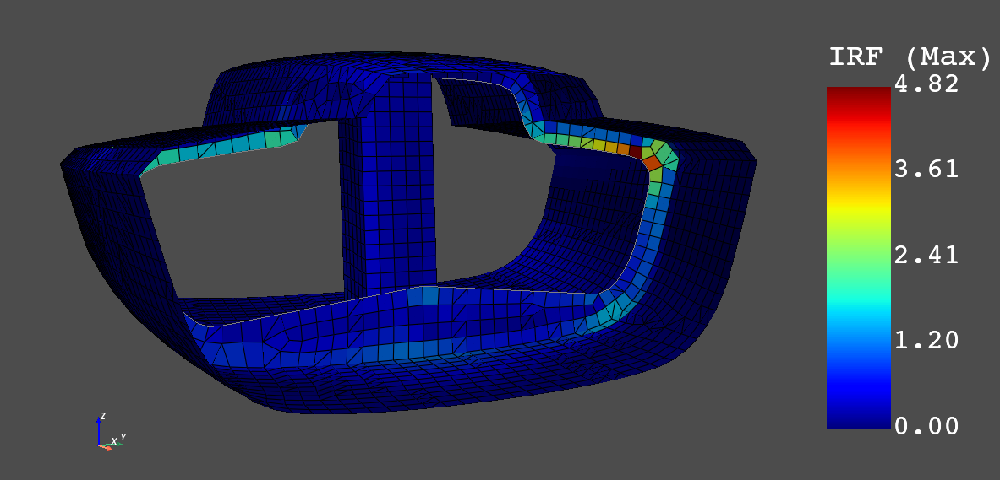

Local PyACP executable#
This example demonstrates running the PyACP server from a local executable instead of in a Docker container. The gRPC server of ACP is delivered with the unified installer. It can be beneficial to work with the local executable if the data is already stored locally or to reduce the latency between the server and client.
In this example, PyACP is used to add a lay-up to a MAPDL model (CDB file) which already contains the material properties, boundary conditions and solution settings. The MAPDL model with lay-up definition is solved with pyMAPDL. Finally, the result is post-processed with pyDPF Composites to run a composite failure analysis.
The first step is to specify the license server and the version of the unified installer. These environment variables are used within the Python script and by the gRPC servers (ACP, MAPDL, and DPF) for the license checkout.
set ANSYS_VERSION=231
set ANSYSLMD_LICENSE_FILE=1055@my_license_server
Ensure that the required Python modules (ansys-acp-core, ansys-dpf-core, ansys-dpf-composites and ansys-mapdl) are installed before launching Python.
import os
import pathlib
import tempfile
import numpy as np
import grpc
ANSYS_VERSION = os.environ["ANSYS_VERSION"]
AWP_ROOT_KEY = f"AWP_ROOT{ANSYS_VERSION}"
acp_grpc_exe = os.path.join(os.environ[AWP_ROOT_KEY], "ACP", "acp_grpcserver.exe")
# Launch gRPC server and PyACP client
import ansys.acp.core as pyacp
pyacp_server = pyacp.launch_acp(
binary_path=acp_grpc_exe,
port=50555,
stdout_file="pyacp.log",
stderr_file="pyacp.err",
)
pyacp.wait_for_server(pyacp_server, timeout=30) # ensure the server is running
pyacp_client = pyacp.Client(pyacp_server)
"""
Modelling of The Composite Lay-up with PyACP
"""
# Import the model from MAPDL input file (CDB)
# Note: the unit system is required for the post-processing
CDB_FILENAME = "class40.cdb"
model = pyacp_client.import_model(
path=CDB_FILENAME, format="ansys:cdb", unit_system=pyacp.UnitSystemType.MPA
)
model
# Configure the materials.
# The ply type is required to run the failure analysis with dpf composites
mat_corecell_81kg = model.materials["1"]
mat_corecell_81kg.name = "Core Cell 81kg"
mat_corecell_81kg.ply_type = "isotropic_homogeneous_core"
mat_corecell_103kg = model.materials["2"]
mat_corecell_103kg.name = "Core Cell 103kg"
mat_corecell_103kg.ply_type = "isotropic_homogeneous_core"
mat_eglass_ud = model.materials["3"]
mat_eglass_ud.name = "E-Glass (uni-directional)"
mat_eglass_ud.ply_type = "regular"
# Create Fabrics
corecell_81kg_5mm = model.create_fabric(
name="Corecell 81kg", thickness=0.005, material=mat_corecell_81kg
)
corecell_103kg_10mm = model.create_fabric(
name="Corecell 103kg", thickness=0.01, material=mat_corecell_103kg
)
eglass_ud_02mm = model.create_fabric(
name="eglass UD", thickness=0.0002, material=mat_eglass_ud
)
# Specify rosettes (coordinate systems)
ros_deck = model.create_rosette(name="ros_deck", origin=(-5.9334, -0.0481, 1.693))
ros_hull = model.create_rosette(name="ros_hull", origin=(-5.3711, -0.0506, -0.2551))
ros_bulkhead = model.create_rosette(
name="ros_bulkhead",
origin=(-5.622, 0.0022, 0.0847),
dir1=(0.0, 1.0, 0.0),
dir2=(0.0, 0.0, 1.0),
)
ros_keeltower = model.create_rosette(
name="ros_keeltower", origin=(-6.0699, -0.0502, 0.623), dir1=(0.0, 0.0, 1.0)
)
# Add Oriented Selection Sets
oss_deck = model.create_oriented_selection_set(
name="oss_deck",
orientation_point=(-5.3806, -0.0016, 1.6449),
orientation_direction=(0.0, 0.0, -1.0),
element_sets=[model.element_sets["DECK"]],
rosettes=[ros_deck],
)
oss_hull = model.create_oriented_selection_set(
name="oss_hull",
orientation_point=(-5.12, 0.1949, -0.2487),
orientation_direction=(0.0, 0.0, 1.0),
element_sets=[model.element_sets["HULL_ALL"]],
rosettes=[ros_hull],
)
oss_bulkhead = model.create_oriented_selection_set(
name="oss_bulkhead",
orientation_point=(-5.622, -0.0465, -0.094),
orientation_direction=(1.0, 0.0, 0.0),
element_sets=[model.element_sets["BULKHEAD_ALL"]],
rosettes=[ros_bulkhead],
)
esets = [
model.element_sets["KEELTOWER_AFT"],
model.element_sets["KEELTOWER_FRONT"],
model.element_sets["KEELTOWER_PORT"],
model.element_sets["KEELTOWER_STB"],
]
oss_keeltower = model.create_oriented_selection_set(
name="oss_keeltower",
orientation_point=(-6.1019, 0.0001, 1.162),
orientation_direction=(-1.0, 0.0, 0.0),
element_sets=esets,
rosettes=[ros_keeltower],
)
# Add plies to all parts
def add_ply(mg, name, ply_material, angle, oss):
return mg.create_modeling_ply(
name=name,
ply_material=ply_material,
oriented_selection_sets=oss,
ply_angle=angle,
number_of_layers=1,
global_ply_nr=0, # add at the end
)
angles = [-90.0, -60.0, -45.0 - 30.0, 0.0, 0.0, 30.0, 45.0, 60.0, 90.0]
for mg_name in ["hull", "deck", "bulkhead"]:
mg = model.create_modeling_group(name=mg_name)
oss_list = [model.oriented_selection_sets["oss_" + mg_name]]
for angle in angles:
add_ply(mg, "eglass_ud_02mm_" + str(angle), eglass_ud_02mm, angle, oss_list)
add_ply(mg, "corecell_103kg_10mm", corecell_103kg_10mm, 0.0, oss_list)
for angle in angles:
add_ply(mg, "eglass_ud_02mm_" + str(angle), eglass_ud_02mm, angle, oss_list)
mg = model.create_modeling_group(name="keeltower")
oss_list = [model.oriented_selection_sets["oss_keeltower"]]
for angle in angles:
add_ply(mg, "eglass_ud_02mm_" + str(angle), eglass_ud_02mm, angle, oss_list)
add_ply(mg, "corecell_81kg_5mm", corecell_81kg_5mm, 0.0, oss_list)
for angle in angles:
add_ply(mg, "eglass_ud_02mm_" + str(angle), eglass_ud_02mm, angle, oss_list)
# Update the lay-up model
model.update()
# Store ACP model and generate the output for MAPDL and the post-processing with DPF
os.mkdir("tmp")
WORKDIR = os.path.join(os.path.abspath("."), "tmp")
ACPH5_FILE = os.path.join(WORKDIR, "class40.acph5")
CDB_FILENAME_OUT = os.path.join(WORKDIR, "class40_analysis_model.cdb")
COMPOSITE_DEFINITIONS_H5 = os.path.join(WORKDIR, "ACPCompositeDefinitions.h5")
MATML_FILE = os.path.join(WORKDIR, "materials.xml")
# Store ACP DB
model.save(ACPH5_FILE, save_cache=True)
# Input files for MAPDL and DPF
model.save_analysis_model(CDB_FILENAME_OUT)
model.export_shell_composite_definitions(COMPOSITE_DEFINITIONS_H5)
model.export_materials(MATML_FILE)
"""
Solve Model with Composite efinitions with pyMAPDL
"""
# Launch MAPDL
from ansys.mapdl.core import launch_mapdl
mapdl = launch_mapdl()
# Load the CDB file with the composite lay-up
mapdl.input(CDB_FILENAME_OUT)
# Solve and show deformations
mapdl.allsel()
mapdl.slashsolu()
mapdl.solve()
mapdl.post1()
mapdl.set("last")
mapdl.post_processing.plot_nodal_displacement(component="NORM")
{kind=link}

Total deformations (usum)#
"""
Run Failure Analysis with DPF Composites
"""
# Import post-processing module (ansys-dpf-composites)
from ansys.dpf.composites.failure_criteria import (
CombinedFailureCriterion,
MaxStrainCriterion,
MaxStressCriterion,
CoreFailureCriterion,
)
from ansys.dpf.composites.result_definition import ResultDefinition
from ansys.dpf.composites.server_helpers import load_composites_plugin
import ansys.dpf.core as dpf
# Launch local gRPC server of dpf and connect to
dpf_server = dpf.start_local_server(ansys_path=os.environ[AWP_ROOT_KEY])
base = dpf.BaseService(server=dpf_server, load_operators=False)
base.load_library("Ans.Dpf.EngineeringData.dll", "EngineeringData")
composites_plugin_path = os.path.join(
os.environ[AWP_ROOT_KEY],
"dpf",
"plugins",
"dpf_composites",
"composite_operators.dll",
)
base.load_library(composites_plugin_path, "Composites")
# Configure failure criteria
max_strain = MaxStrainCriterion()
max_stress = MaxStressCriterion()
core_failure = CoreFailureCriterion()
cfc = CombinedFailureCriterion(
name="Combined Failure Criterion",
failure_criteria=[max_strain, max_stress, core_failure],
)
rstfile_path = os.path.join(mapdl.directory, f"{mapdl.jobname}.rst")
rd = ResultDefinition(
name="combined failure criteria",
rst_files=[rstfile_path],
material_files=[MATML_FILE],
composite_definitions=[COMPOSITE_DEFINITIONS_H5],
combined_failure_criterion=cfc,
)
# Configure and run DPF failure operator
fc_op = dpf.Operator("composite::composite_failure_operator")
elements = list([int(v) for v in np.arange(1, 3996)])
rd.element_scope = elements
fc_op.inputs.result_definition(rd.to_json())
output_all_elements = fc_op.outputs.fields_containerMax()
failure_value_index = 1
failure_mode_index = 0
# Plot inverse reserve factors
irf_field = output_all_elements[failure_value_index]
irf_field.plot()
Maximum inverse reserve factor of each element#